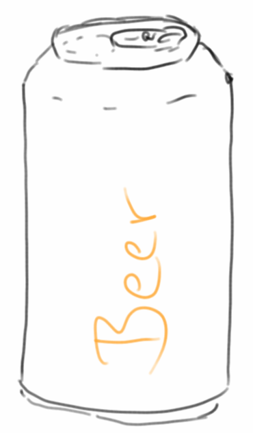

Containers: Lists
Nach unserem ersten Kontakt mit ein paar Algorithmen, wollen wir uns jetzt mit Containern, also Behältern beschäftigen. Mit Behältern meinen wir Behälter für Daten, also Datencontainer. Grundsätzlich gibt es zwei Arten:
- sequentielle Container und
- assoziative Container.
Beispiele für sequentielle Container sind Arrays, ArrayList und LinkedList, sowie die Stack und die Queue Klasse. Beispiele für assoziative Container sind die Maps und die Sets. In diesem Kapitel beschäftigen wir uns mit den sequentiellen Container.
.
Arrays
Den einfachsten Container den wir bereits aus dem ersten Semester kennen ist das Array. Wenn wir z.B. ein Array für zehn Ganzzahlen anlegen wollen, dann geht das so:
int[] eggs = new int[10];
Arrays sind zwar sehr schnell, haben aber den Nachteil, dass sie ihre Größe nicht mehr ändern können. Wenn wir also einmal ein Array für zehn Elemente angelegt haben, dann können wir da keine elf rein tun. Wir verwenden Arrays eigentlich nur wenn wir es mit Binärdaten zu tun haben, z.B. Bilder-, Audio- oder Videodateien. Ansonsten werden wir Arrays eher meiden, denn es gibt viel bessere Datenstrukturen.
.
Lists
Die Liste ist wahrscheinlich der nächst einfachste Datencontainer nach dem Array. Die Liste existiert in mehreren Varianten, die beiden prominentesten sind die ArrayList und die LinkedList. Eine Liste ist ein sequentieller Container, d.h. die Elemente einer Liste haben eine Ordnung, immer beginnend bei Index 0, und es gibt keine Löcher in einer Liste. Eine Liste hat die folgenden Methoden:
- size(): gibt die Größe der Liste zurück;
- add( object ): fügt ein Objekt am Ende der Liste an;
- get( i ): gibt das Objekt, das an Position i gespeichert ist;
- set( i, object ): ersetzt das Element an Position i mit diesem neuen Objekt;
- remove( i ): das Element an Position i wird entfernt;
- indexOf( object ): sucht nach dem Objekt in der Liste und gibt dessen Position zurück, oder -1 falls es nicht in der Liste ist. Diese Methode ist nicht die schnellste wie wir noch sehen werden.
Es gibt auch noch eine contains() Methode, die sollten wir aber eher selten benutzen.
Schauen wir uns mal ein Beispiel an wie man Listen im echten Leben verwendet. Angenommen wir hätten mehrere Städte die wir nacheinander bereisen wollten, dann wäre eine Liste eine gute Wahl:
// init list
List<String> cities = new ArrayList<String>();
// add cities
cities.add("Nuremberg");
cities.add("Munich");
cities.add("Hamburg");
cities.add("Berlin");
cities.add("Frankfurt");
// get the third city
println("Third city: " + cities.get(2));
// remove the third city
cities.remove(2);
// replace the second city by another city
cities.set(1, "Stuttgart");
// search for Stuttgart
println("Stuttgart is at position: " + cities.indexOf("Stuttgart"));
// list all remaining cities
println("All remaining cities:");
for (String city : cities) {
print(city + ", ");
}
println("\nThere is a total of " + cities.size() + " cities.");
Wann sollten wir Listen verwenden? Listen können verwendet werden, wenn
- die Reihenfolge wichtig ist, z.B. wenn man von Stadt zu Stadt reist: München -> Nürnberg -> Berlin -> Hamburg;
- man eine Datenstruktur benötigt, die einen Index und einen zugehörigen Wert hat;
- man ein Array benötigt, das dynamisch schrumpfen und wachsen kann.
.
List Interface
Vielleicht ist aufgefallen, dass wir oben nicht
ArrayList<String> cities = new ArrayList<String>();
verwendet haben, sondern anstelle
List<String> cities = new ArrayList<String>();
Das war absichtlich. Warum? Der Grund dafür ist, dass sowohl ArrayList als auch LinkedList das List Interface implementieren. Das ist sehr praktisch, denn wenn wir aus irgendeinem Grund später unsere Meinung ändern und eine LinkedList anstelle einer ArrayList verwenden wollen, gibt es nur eine Stelle die wir ändern müssen. Wir werden diese Verwendung von Schnittstellen später immer wieder sehen.
Stellt sich die Frage, wann soll ich eine ArrayList verwenden und wann eine LinkedList? Die Antwort ist ziemlich einfach:
- wenn wir viel lesen, verwenden wir die ArrayList,
- wenn wir aber viel schreiben (also hinzufügen, ersetzen oder entfernen), dann verwenden wir besser die LinkedList.
.
Stack (LIFO)
Kommen wir zu einer neuen Datenstruktur, dem Stack. Wenn man sich unter Stack einen Stapel Papier vorstellt, dann hat man die Datenstruktur eigentlich schon verstanden. Bei einem riesen Stapel Papier kann man nicht einfach ein Blatt aus der Mitte herausziehen, das geht praktisch nicht. Genauso ist es auch beim Stack: wir können nur auf das oberste Element zugreifen. Erst wenn wir das oberste Element wegnehmen, können wir sehen was darunter ist. Oder wenn wir neue Elemente hinzufügen, können wir die nur oben hinzufügen. Wir können nicht einfach zwischendrin irgend ein Blatt einfügen. Das führt zu der Bezeichnung Last-In-First-Out (LIFO).
Welche Methoden braucht man um mit dem Stack arbeiten zu können? Im Prinzip genügen die folgenden:
- size(): gibt die Größe des Stacks zurück, also wieviel Objekte im Stack sind;
- push( object ): legt ein neues Objekt oben auf dem Stapel ab;
- pop(): nimmt das oberste Element vom Stapel, das Element ist danach nicht mehr im Stapel;
- peek(): gibt uns das oberste Element des Stapels, lässt es aber im Stapel.
Als kleine Anwendung betrachten wir folgendes Beispiel: Nach unserer Reise quer durch Deutschland, wollen wir in genau umgekehrter Reihenfolge wieder zurückreisen. Genau dafür eignet sich der Stapel perfekt:
// init stack
Stack<String> cities = new Stack<String>();
// add cities to the stack
cities.push("Nuremberg");
cities.push("Munich");
cities.push("Hamburg");
cities.push("Berlin");
cities.push("Frankfurt");
println("There is a total of " + cities.size() + " cities on the stack.");
// whats on top of the stack?
println("Topmost city: " + cities.peek());
println("There is a total of " + cities.size() + " cities on the stack.");
// remove one by one the top element from the stack
println("Traveling back the way we came:");
println(cities.pop());
println(cities.pop());
println(cities.pop());
println(cities.pop());
println(cities.pop());
println("There is a total of " + cities.size() + " cities on the stack.");
Wofür sonst kann man denn die Datenstruktur Stack noch verwenden? Z.B. für:
- Browser History: man möchte die zuletzt besuchten Webseiten in umgekehrter Reihenfolge auflisten;
- man möchte die Reihenfolge von irgendetwas umkehren;
- in einem Editor (z.B. Word oder Eclipse) wird ein Stack verwendet für die Undo Aktionen;
- in der Mathematik oder beim Programmierung möchte man sicher stellen, dass es für jede offene Klammer wieder eine geschlossene gibt;
- in einer sogenannten Stack-Machine (z.B. die Java Virtual Machine ist eine Stack-Machine).
Im Deutschen findet man auch manchmal für die Datenstruktur Stack die Bezeichnung Keller, macht wenig Sinn, klar Dachgeschoß würde viel mehr Sinn machen.
.
Queue (FIFO)
Die Queue, auch Warteschlange genannt, ist eine Liste die dem Prinzip des First-In-First-Out folgt. Ähnlich dem Prinzip einer Warteschlange an der Kasse, oder wenn man in einer Telefonwarteschlange ist, erwartet man, dass die Personen die weiter vorne in der Schlange stehen zu erst dran kommen. Für unsere Datenstruktur bedeutet das, dass man nur auf der linken Seite (dem Ende der Schlange) neue Elemente hinzufügen kann, und nur auf der rechten Seite (dem Anfang der Schlange) Elemente entnehmen kann.
Die folgenden Methoden werden von der Queue Datenstruktur unterstützt:
- size(): gibt uns die Anzahl der Elemente in der Queue;
- add( object ): fügt ein neues Element am Ende der Schlange hinzu;
- remove(): entnimmt ein Element am Anfang der Schlange;
- peek(): ähnlich wie beim Stack erlaubt uns peek() nachzusehen was denn am Anfang der Schlange ist, ohne das Element aber von der Schlange zu entfernen.
Ein bischen komisch ist, dass es in Java keine Klasse Queue gibt, sondern nur ein Interface. Ist aber auch nicht so schlimm. Zwei Klassen die dieses Interface implementieren sind die LinkedList und die PriorityQueue.
Als kleines Beispiel setzen wir eine Warteschlange vor einer Kasse um:
// init queue
Queue<String> lineOfPeople = new LinkedList<String>();
// add people
lineOfPeople.add("fritz");
lineOfPeople.add("lisa");
lineOfPeople.add("hans");
println("There is a total of " + lineOfPeople.size() + " people waiting in line.");
// who is in front of the queue
println("First person in line: " + lineOfPeople.peek());
println("There is a total of " + lineOfPeople.size() + " people waiting in line.");
// remove one by one the top element from the stack
println("Customers checking out:");
println(lineOfPeople.remove());
println(lineOfPeople.remove());
println(lineOfPeople.remove());
println("There is a total of " + lineOfPeople.size() + " people waiting in line.");
Auch für die Queue gibt es verschiedene Anwendungsszenarien:
- Telefonwarteschlange in einem Call Center;
- Druckaufträge für einen Drucker sind normalerweise in einer Warteschlange;
- Einchecken beim Flugzeug;
- die Tastenanschläge einer Tastatur.
Die PriorityQueue werden wir später noch ein paar mal wiedersehen.
.
Review
Obwohl es so aussieht wie wenn wir bisher nicht allzuviel gemacht hätten, soll das nicht darüber hinwegtäuschen, dass die Datenstrukturen ArrayList, LinkedList und Stack unser Brot und Butter sein werden. Auch die Queue werden wir ab und zu wiedersehen. Ähnlich wie das Ein-mal-eins, redet man da nicht groß drüber, aber man geht davon aus, dass es jeder wie aus dem "Effeff" kann.
.
Projekte
In den Projekten werden wir uns ganz kurz noch einmal das Array ansehen, dann ein paar Beispiele mit ArrayList und LinkedList sehen, und danach folgen dann Stack und Queue Beispiele. Das wohl interessanteste Projekt ist das ArithmeticExpression Projekt: mithilfe zweier Stacks implementieren wir einen Taschenrechner!
.
 Histogram
Histogram
Wir beginnen mit einer kleinen Anwendung die Arrays benutzt. Es geht darum ein Histogramm ausgeben zu lassen, als Beispieldaten dienen Punkte einer Klausur. Wir wissen, dass die Punkt zwischen 0 und 100 liegen, und wir möchten, dass es genau elf sogenannte Bins gibt, also Kategorien, in denen wir die Punkte kummulieren möchten. Da wir wissen, dass es genau elf gibt, nie mehr und nie weniger, bietet sich das Array als Datentyp an. Ansonsten müssten wir eine Liste nehmen.
private int[] histogramData = new int[11];
Das Befüllen der Bins ist relative einfach mit der Hilfe unseres Freunds Ganzzahldivision:
private void putScoreInHistogram(int score) {
histogramData[score / 10]++;
}
Die Daten selbst kommen aus der "Scores.txt" Datei, die wir Zeile für Zeile einlesen, und in Ganzzahlen umwandeln:
private void readData() {
try {
BufferedReader rd = new BufferedReader(new FileReader("Scores.txt"));
while (true) {
String line = rd.readLine();
if (line == null)
break;
int score = Integer.parseInt(line);
putScoreInHistogram(score);
}
rd.close();
} catch (Exception e) {
e.printStackTrace();
}
}
Wenn wir fertig sind, gehen wir das Array durch und geben es auf der Konsole aus. Wir könnten einfach die Zahlen ausgeben, viel hübscher sind aber kleine Sternchen (Asterisk nicht Asterix!):
private String convertToStars(int i) {
String stars = "";
for (int j = 0; j < i; j++) {
stars += "*";
}
return stars;
}
.
ACMGraphics
Seit Beginn des letzten Semesters verwenden wir ja die ACM Graphikbibliothek acm.jar. Natürlich würde uns interessieren wie die wirklich funktioniert. Im Prinzip sind alle Programs, also Program, ConsoleProgram und GraphicsProgram eigentlich Unterklassen der Standard Java Klasse Applet. Das hat den angenehmen Nebeneffekt, dass alle unsere ACM Programme auch im Browser laufen (insofern der Browser Java unterstützt, was in letzter Zeit sehr wenige tun).
Ein Applet sieht im allgemeinen wie folgt aus:
public class ACMGraphics extends Applet {
public void init() {
...
}
public void run() {
...
}
public void paint(Graphics g) {
...
}
}
Es gibt also eine init() und eine run() Methode, und ja, das sind unsere init() und run() Methoden die wir schon die ganze Zeit verwenden. Außerdem gibt es auch noch die paint() Methode, auf die wir gleich kommen.
Was wir allerdings nicht sehen ist die add() Methode mit der wir unsere GRects und GOvals usw. hinzugefügt haben. Die Frage stellt sich wozu werden denn die GObjects hinzugefügt? Ja, richtig wenn das hier das Kapitel über Listen ist, dann wird es wohl einen Liste sein:
public class ACMGraphics extends Applet {
private ArrayList<GRect> gObjects = new ArrayList<GRect>();
private void add(GRect r) {
gObjects.add(r);
}
...
}
Das war der erste Teil. Jetzt stellt sich die Frage, wie zeichnet man denn die GObjects? Das passiert in der paint() Methode,
public void paint(Graphics g) {
for (GRect rect : gObjects) {
rect.draw(g);
}
}
wo wir ein GObject nach dem anderen durchgehen und ihm sagen es soll sich doch selbst zeichnen. Wie funktioniert das? Dafür definieren wir eine Klasse GRect,
class GRect {
private int x, y, w, h;
public GRect(int x, int y, int w, int h) {
this.x = x;
this.y = y;
this.w = w;
this.h = h;
}
public void draw(Graphics g) {
g.drawRect(x, y, w, h);
}
}
und die benutzt die Standard Java Methode drawRect() der Graphics Klasse. Das war's. Mit einer kleinen Einschränkung: Animationen kann unsere einfache Version der ACM Library noch nicht, dafür müssen wir warten bis wir was von Multi-Threading gehört haben.
.
Homemade ArrayList
Wir wollen unsere eigene ArrayList Klasse schreiben, und sie soll (fast) alles können was die normale ArrayList Klasse von Java auch kann, also die folgenden Methoden haben:
- size()
- add( object )
- get( i )
- set( i, object )
Die remove() Methode haben wir absichtlich weggelassen, da die etwas komplizierter ist. Der Anfang unserer HomemadeArrayList sieht wie folgt aus:
public class HomemadeArrayList {
private Object[] arr;
private int capacity = 10;
private int position = -1;
public HomemadeArrayList() {
arr = new Object[capacity];
}
public int size() {
return position + 1;
}
...
Die Daten unserer HomemadeArrayList werden in dem Array von Objekten, also Object[] arr, gespeichert. Das hat eine anfängliche Kapazität von 10, die wir im Constructor festlegen. D.h. erst mal können wir in unserer ArrayList nur zehn Objekte speichern.
Dann haben wir noch einen Positionspointer, position, der uns sagt, wieviel von dem Array schon belegt ist. Am Anfang ist es leer, deswegen -1. Wenn wir jetzt ein Element hinzufügen,
public void add(Object obj) {
if (position < capacity-1) {
position++;
arr[position] = obj;
} else {
// we need to increase size of underlying array
}
}
müssen wir erst mal checken ob wir noch Platz haben, dann unseren Positionspointer um eins erhöhen, und natürlich nicht vergessen unser neues Element zu speichern. Wenn wir an die Grenzen unseres Arrays stoßen, haben wir Pech gehabt.
Das Lesen eines Objektes mit get() ist ganz einfach,
public Object get(int i) {
if (i >= 0 && i <= position) {
return arr[i];
}
return null;
}
wir müssen lediglich darauf achten, dass die Werte von i in Ordnung sind. Schließlich fehlt nur noch die set() Methode,
public void set(int i, Object obj) {
if (i >= 0 && i <= position) {
arr[i] = obj;
}
}
War gar nicht so schwer. Natürlich haben wir die schweren Sachen auch weg gelassen.
Challenge: Man könnte versuchen die remove() Methode zu implementieren. Und man könnte eine generische Klasse daraus machen.
.
Homemade LinkedList
Wir wollen jetzt unsere eigene LinkedList Klasse schreiben. Sie soll die folgenden Methoden haben:
- size()
- add( object )
- get( i )
- set( i, object )
Die remove() Methode haben wir auch wieder weggelassen. Bevor wir aber beginnen können, müssen wir uns kurz überlegen, wie eine LinkedList ihre Daten speichert. Das geht über die Verlinkung von Knoten. Ein Knoten ist eine einfache Klasse,
class Node {
public Node next;
public Object obj;
}
bestehend aus einem Objekt und einem Link zum nächsten Knoten. D.h. wir haben irgendwo einen ersten Knoten, first, und von dem aus hangeln wir uns von einem Knoten zum nächsten durch die ganze Liste, bis wir den Knoten haben, den wir suchten. Unsere HomemadeLinkedList Klasse hat also eine Referenz auf den ersten Knoten, und weiss noch wie groß sie ist:
public class HomemadeLinkedList {
private Node first;
private int size = 0;
public HomemadeLinkedList() {
// nothing to do
}
public int size() {
return size;
}
...
Wenn wir neue Elemente hinzufügen,
public void add(Object obj) {
if (first == null) {
first = new Node();
first.obj = obj;
size++;
} else {
// find last node
Node current = first;
while (current.next != null) {
current = current.next;
}
// we are at the end, add new one
current.next = new Node();
current.next.obj = obj;
size++;
}
}
dann müssen wir als allererstes feststellen, ob überhaupt schon was in unserer Liste ist, also ob first == null. Falls das der Fall ist, müssen wir einen allerersten neuen Knoten anlegen. Falls nein, dann müssen wir den letzten Knoten finden, denn add() bedeutet ja, dass wir etwas ans Ende der Liste anfügen. Wenn wir dann etwas hinzugefügt haben, müssen wir natürlich die Größe, size, um eins erhöhen.
Das Lesen eines Objektes mit get() ist nicht ganz so einfach wie bei der ArrayList,
public Object get(int i) {
Node nde = getNode(i);
if (nde != null) {
return nde.obj;
}
return null;
}
wir müssen erst einmal wissen, ob wir überhaupt ein Element i haben. Das macht die Methode getNode():
private Node getNode(int i) {
int cnt = 0;
Node current = first;
while (current != null) {
if (cnt == i) {
return current;
}
current = current.next;
cnt++;
}
return null;
}
Im Prinzip geht diese Methode unsere Liste durch, einen Knoten nach dem anderen, beginnend bei dem ersten, first. Außerdem zählt sie mit, wieviele Knoten wir schon besucht haben, und wenn der Zähler cnt gleich dem gesuchten i ist, dann haben wir den Knoten gefunden.
Wenn wir einmal die Methode getNode() haben, dann ist auch das set() relativ problemlos:
public void set(int i, Object obj) {
Node nde = getNode(i);
if (nde != null) {
nde.obj = obj;
}
}
Auch hier kann man noch die remove() Methode implementieren und die Klasse generisch machen.
.
 ArrayList vs LinkedList
ArrayList vs LinkedList
Weiter oben haben wir uns die Frage gestellt, wann man eine ArrayList und wann eine LinkedList verwenden sollte. Die Antwort war: bei häufigem Lesen die ArrayList und bei häufigem Schreiben die LinkedList. Stimmt das aber auch?
Am besten wir prüfen das mal nach. Dazu messen wir einfach wie lange das Lesen bzw. Schreiben dauert. Wir schreiben also eine Methode testRead(List<Integer> al), die wir einmal mit einer ArrayList und einmal mit einer LinkedList aufrufen:
println("ArrayList read time: " + testRead(new ArrayList<Integer>()) + " ms");
println("LinkedList read time: " + testRead(new LinkedList<Integer>()) + " ms");
(Wir sehen wie praktisch das List Interface ist.) Kommen wir zur Test Methode:
private static long testRead(List<Integer> al) {
// fill list with some dummy data:
for (int i = 0; i < 1000000; i++) {
al.add(42);
}
// start the read test:
long start = System.currentTimeMillis();
for (int i = 0; i < 100000; i++) {
// read an element at a random position:
int randomPos = (int) (100000.0 * Math.random());
al.get(randomPos);
}
long end = System.currentTimeMillis();
return (end - start);
}
Im ersten Teil, befüllen wir die Liste mit einer Millionen Zahlen, immer die selbe. Danach beginnen wir mit unserem Test: wir lesen einhunderttausend Mal von einer zufälligen Position in der Liste. Die Zeit ermitteln wir mit der System.currentTimeMillis() Methode, die gibt uns die Zeit die seit dem 01.01.1970 vergangen ist in Millisekunden.
Das Ergebnis ist ziemlich eindeutig:
ArrayList read time: 19 ms LinkedList read time: 7556 ms
Die ArrayList ist fast zehntausend mal schneller! Beim Schreiben ist der Unterschied nicht ganz so krass, da ist die LinkedList "nur" doppelt so schnell.
Vielleicht ist aufgefallen, dass wir hier eine statische Methode verwendet haben. Das ist ausnahmsweise mal o.k., weil wir Zeitmessungen machen, und statische Methoden etwas schneller sind. Das muss aber die Ausnahme bleiben, normalerweise dürfen wir static nie verwenden, auch wenn's schnell gehen soll! Der Grund ist, dass wir nicht mehr objekt-orientiert programmieren, wenn wir static verwenden.
Fassen wir zusammen: Die ArrayList
+ hat sehr schnellen, direkten Zugriff auf Elemente, vor allem beim Lesen.
- Beim Einfügen und auch Entfernen von Elementen müssen alle nachfolgenden Elemente verschoben werden, und das führt dazu, dass diese Operation im Durchschnitt eher langsam ist.
- Stößt man an die interne Grenze des zugrundeliegenden Arrays, dann kostet es sehr viel Zeit ein einziges neues Element hinzuzufügen.
Bei der LinkedList ist
+ das Einfügen und Entfernen von Elementen eine einfache und schnelle Operation da nur ein Link neu gesetzt werden muss.
+ Da es kein zugrundeliegendes Array gibt, kann man auch nie an dessen Grenze stoßen.
- Um ein bestimmtes Element in der Liste zu finden, muss man u.U. durch die ganze Liste iterieren, da man keinen direkten Zugriff auf ein beliebiges Element hat. Jedes Element kennt nur sein Nachfolgeelement. Das dauert.
.
Palindrome
Wir wollen ein einfaches ConsoleProgram schreiben, das feststellt ob ein gegebenes Wort ein Palindrom ist, d.h. sowohl vorwärts als auch rückwärts das Gleiche bedeutet, wie z.B. "Madam".
public void run() {
String text = readLine("Enter a word: ");
println("The word is a palindrome: " + isPalindrome(text));
}
In der Methode isPalindrome() checken wir, ob das umgekehrte Wort mit dem ursprünglichen übereinstimmt:
private boolean isPalindrome(String text) {
String revers = reverseString(text);
return revers.equals(text);
}
Kommen wir zur letzten Methode reverseString(): Es gibt natürlich mehrere Möglichkeiten einen String umzukehren, aber eine verwendet die Klasse Stack:
private String reverseString(String text) {
Stack<Character> st = new Stack<Character>();
for (int i = 0; i < text.length(); i++) {
char c = text.charAt(i);
st.push(c);
}
String revers = "";
while (!st.isEmpty()) {
char c = st.pop();
revers = revers + c;
}
return revers;
}
Im ersten Teil definieren wir einen Stack für Characters, auf den wir einen Buchstaben nach dem anderen pushen. Im zweiten Teil holen wir einen Buchstaben nach dem anderen mittels pop() wieder vom Stack, bis dieser leer ist.
Das ist jetzt nicht die effektivste Art und Weise einen String umzukehren, aber es zeigt an einem einfachen Beispiel die Arbeitsweise der Klasse Stack.
.
Parentheses
Eine klassische Anwendung für die Stack Klasse ist es festzustellen, ob die Klammern in einem Ausdruck stimmen, also ob es für jede geöffnete Klammer auch wieder eine geschlossene gibt. Beispiele sind "(())" , "(()" , ")" und "(()(()))". Wir wollen also eine Methode doParenthesesMatch() schreiben, die feststellt ob alles stimmt:
public void run() {
println("(()): " + doParenthesesMatch("(())"));
println("((): " + doParenthesesMatch("(()"));
println("): " + doParenthesesMatch(")"));
println("(()(())): " + doParenthesesMatch("(()(()))"));
}
Dazu verwenden wir wieder einen Stack für Buchstaben:
private boolean doParenthesesMatch(String text) {
Stack<Character> stack = new Stack<Character>();
for (int i = 0; i < text.length(); i++) {
char c = text.charAt(i);
switch (c) {
case '(':
stack.push(c);
break;
case ')':
if (!stack.isEmpty()) {
stack.pop();
} else {
return false;
}
break;
default:
System.out.println("we should never get here!");
break;
}
}
// if parenthesis matched, the stack should be empty now:
if (stack.isEmpty()) {
return true;
}
return false;
}
Wir lesen dann Zeichen für Zeichen ein. Wenn es eine offene Klammer ist, dann pushen wir die auf den Stack. Wenn es eine geschlossene Klammer ist, dann popen wir das oberste Element vom Stack. Hier müssen wir allerdings aufpassen, es könnte sein, dass gar nichts auf dem Stack ist. Das würde z.B. passieren wenn der Nutzer ")" eingibt. Sind wir dann durch, ist ganz einfach festzustellen, ob die gleiche Anzahl von offenen wie geschlossenen Klammern war: wenn nämlich der Stack leer ist, dann war alles in Ordnung.
Challenge: etwas komplizierter (aber nicht viel) wird es wenn man auch eckige und geschweifte Klammern zulässt: {([]{()})({})} und [{]}.
.
 ArithmeticExpression
ArithmeticExpression
Kommen wir zu einer der wichtigsten Anwendung der Stack Klasse: der Auswertung arithmetischer Ausdrücke, wie z.B.,
1 + ( 2 + 3 * 4 + 3 ) / 2
Wir wollen uns aber der Einfachheit halber auf vollständig geklammerte arithmetische Ausdrücke, also z.B.
( ( 1 + ( 2 + 3 ) ) * ( ( 4 + 3 ) / 2 ) )
beschränken. Diese Form der Notation nennt man auch die Infix Notation (nicht mit der Idefix Notation zu verwechseln). Die Infix Notation ist zwar ganz praktisch für Menschen, aber für Computer taugt sie nicht viel. Computer lieben eher die Postfix Notation. Deswegen müssen wir aus Infix Postfix machen. Und dafür gibt es ganz einfache Regeln:
- Wir lesen einen Token nach dem anderen;
- ist der Token ein Operator, also '+', '-', '*' oder '/', dann schieben wir ihn auf den Stack;
- ist er eine Ganzzahl, dann schreiben wir ihn in den out String;
- ist er eine rechte Klammer ')', dann holen wir das oberste Element vom Stack und schreiben es in den out String;
- ist er eine linke Klammer '(', dann machen wir gar nichts.
Das setzen wir einfach in der Methode infixToPostfix() um:
public String infixToPostfix(String infix) {
String out = "";
Stack<String> stack = new Stack<String>();
StringTokenizer st = new StringTokenizer(infix, "()+-*/ ", true);
while (st.hasMoreTokens()) {
String token = st.nextToken().trim();
if (token.length() == 0) {
// do nothing
} else if ("+-*/".contains(token)) {
stack.push(token);
} else if (")".contains(token)) {
out += stack.pop() + " ";
} else if ("(".contains(token)) {
// do nothing
} else {
out += token + " ";
}
}
return out;
}
Eine kleine Komplizierung kommt von den Leerzeichen, aus denen werden nach dem trim() leere Strings, die müssen wir explizit ignorieren. In der Infix Notation sieht unser arithmetischer Ausdruck so aus:
1 2 3 + + 4 3 + 2 / *
Man nennt das auch "reverse polish notation" (RPN). Wir tun uns damit schwer, aber Computer lieben diese Form, weil sie damit sofort weiterrechnen können. Auch hier gibt es wieder ganz einfache Regeln:
- Wir lesen einen Token nach dem anderen;
- ist der Token eine Ganzzahl, dann schieben wir sie auf den Stack;
- ist es ein Operator, dann nehmen wir die beiden obersten Element vom Stack, führen den Operator mit diesen beiden Zahlen aus, und schieben das Ergebnis wieder auf den Stack;
- am Ende dürfte nur noch ein Element auf dem Stack sein, und das ist das Ergebnis.
Das setzen wir in der Methode evaluatePostfix() um:
public int evaluatePostfix(String postfix) {
Stack<Integer> stack = new Stack<Integer>();
StringTokenizer st = new StringTokenizer(postfix, "+-*/ ", true);
while (st.hasMoreTokens()) {
String token = st.nextToken().trim();
if (token.length() == 0) {
// do nothing
} else if ("+-*/".contains(token)) {
int y = stack.pop();
int x = stack.pop();
if (token.equalsIgnoreCase("+")) {
stack.push(x + y);
} else if (token.equalsIgnoreCase("-")) {
stack.push(x - y);
} else if (token.equalsIgnoreCase("*")) {
stack.push(x * y);
} else if (token.equalsIgnoreCase("/")) {
stack.push(x / y);
}
} else {
stack.push(Integer.parseInt(token));
}
}
return stack.pop();
}
Wenn wir das auf den Ausdruck oben anwenden, sollte 18 als Ergebnis herauskommen.
An dieser Stelle sei aber noch einmal auf die Einschränkung hingewiesen: unser Algorithmus funktioniert nur für vollständig geklammerte arithmetische Ausdrücke. Unser Algorithmus kennt auch kein Punkt-vor-Strich. D.h., wenn wir ihm unseren Ausdruck aus dem ersten Semester
( 1 + 3 * 5 / 2 )
vorsetzen würden, käme da etwas falsches heraus. Allerdings wenn wir ihm
( 1 + ( ( 3 * 5 ) / 2 ) )
vorsetzen, dann macht er alles richtig. Es ist nicht allzu schwer unseren Algorithmus so zu modifizieren, dass er auch noch Punkt-vor-Strich kann, aber didaktisch ist er dann nicht mehr ganz so einfach. Wen es interessiert kann bei [1] und [2] nachlesen.
Wir sollten kurz innehalten, um uns der Tragweite bewusst zu werden was wir gerade geschafft haben: mit Hilfe des Stacks haben wir eine Rechenmaschine gebaut. Es stellt sich heraus, dass die Java Virtual Machine auch eine Stack-Maschine ist, d.h., was wir hier gemacht haben, ist fast schon eine Virtual Machine programmiert - fast.
.
GameServerQueue
Multiplayer Games benötigen eine gerechte Möglichkeit Spieler zu Teams zusammenzufassen. Dafür verwendet man am besten eine Queue. Nehmen wir an wir wollen Teams mit jeweils zwei Spielern bilden.
public class GameServerQueue extends ConsoleProgram {
private final int NR_OF_PLAYERS_PER_TEAM = 2;
private Queue<String> playerQueue = new LinkedList<String>();
public void run() {
...
}
}
Als erstes fügen wir ein paar Spieler in die Schlange ein, z.B. fünf verschiedene Namen:
private void fillQueueWithNames() {
while (true) {
String name = readLine("Enter player name: ");
if (name.length() == 0)
break;
playerQueue.add(name);
}
}
Diese werden in der Schlange gespeichert in der Reihenfolge in der sie eingegeben wurden. Dann ist es an der Zeit Paare zu bilden, also jeweils zwei Spieler aus der Queue zu entfernen:
private void removePlayers() {
if (playerQueue.size() >= NR_OF_PLAYERS_PER_TEAM) {
for (int i = 0; i < NR_OF_PLAYERS_PER_TEAM; i++) {
print(playerQueue.remove() + ", ");
}
println();
}
}
Wie wir sehen, passiert das in der richtigen Reihenfolge. Außerdem bleibt der fünfte Spieler in der Schlange, solange bis ein neuer Spieler hinzukommt, denn mit einem Spieler kann man kein Paar bilden.
.
LoadBalance
LoadBalance ist eine typische Queue Anwendung. Wir haben z.B. vier Server, und wir möchten, dass die Last gleichmässig auf die Server verteilt wird. Es gibt verschiedene Möglichkeiten das zu tun. Bei RoundRobin z.B. wird die Last einfach der Reihe nach verteilt. Eine andere berücksichtigt die Last des Servers. Soll heißen, der Server mit der geringsten Last, soll den neuesten Task zugewiesen bekommen.
Wir schreiben ein einfaches ConsoleProgram, in dem wir die serverQueues als Array definieren, und in der init() Methode initialisieren:
public class LoadBalance extends ConsoleProgram {
private final int NR_OF_SERVERS = 4;
private Queue<String>[] serverQueues;
private int currentTaskNr = 0;
public void init() {
serverQueues = new Queue[NR_OF_SERVERS];
for (int i = 0; i < serverQueues.length; i++) {
serverQueues[i] = new LinkedList<String>();
}
}
...
In der run() Methode,
public void run() {
while (true) {
addNewServerTask();
addNewServerTask();
removeSomeRandomTask();
printServerLoad();
pause(1000);
}
}
fügen wir jeweils zwei neue Tasks hinzu, und entfernen einen zufälligen alten. Dazwischen lassen wir uns immer die Serverlast ausgeben:
private void printServerLoad() {
for (int i = 0; i < serverQueues.length; i++) {
print(serverQueues[i].size() + ", ");
}
println();
}
das ist einfach die Größe jeder der vier Queues. Das Entfernen ist ganz einfach zufällig:
private void removeSomeRandomTask() {
int serverNr = (int) (NR_OF_SERVERS * Math.random());
if (serverQueues[serverNr].size() > 0) {
serverQueues[serverNr].remove();
}
}
Bevor wir neue Tasks hinzufügen können, müssen wir erst einmal wissen welcher der Server der mit der geringsten Last ist:
private int findServerWithLowestLoad() {
int serverNr = 0;
int min = serverQueues[serverNr].size();
for (int i = 1; i < serverQueues.length; i++) {
if (min > serverQueues[i].size()) {
min = serverQueues[i].size();
serverNr = i;
}
}
return serverNr;
}
Wir gehen einfach alle Server durch und finden denjenigen, dessen Queue am wenigsten Tasks enthält. Danach geben wir diesem einen neuen Task:
private void addNewServerTask() {
int serverNr = findServerWithLowestLoad();
currentTaskNr++;
serverQueues[serverNr].add("Task Nr." + currentTaskNr);
}
Und das war's schon.
.
Challenges
.
 RandomArt
RandomArt
Mit dem Beispiel ArithmeticExpression kann man auch hübsche, zufällige Graphiken erzeugen. Der Code ist fast identisch, lediglich die Regeln ändern sich ein wenig.
Bevor wir aber beginnen, wollen wir erst einmal eine interessante Beobachtung machen: der Sinus und Cosinus einer beliebigen Zahl ergibt immer einen Wert zwischen -1 und +1. Wenn wir zwei Zahlen die zwischen -1 und +1 sind miteinander multiplizieren, dann ergibt das immer eine Zahl die zwischen -1 und +1 liegt. Und wenn wir den Durchschnitt zweier Zahlen bilden die zwischen -1 und +1 sind, dann kommt da auch wieder eine Zahl zwischen -1 und +1 raus. Diese Tatsache lässt sich nutzen um hübsche Graphiken zu erzeugen.
Für unser RandomArt Projekt wollen wir also die vier mathematischen Funktionen sine, cosine, multiplication und average verwenden. Dabei beginnen wir mit zwei Variablen x und y mit denen wir dann folgendes ausrechnen können:
z = s( x ) // sine z = c( x ) // cosine z = ( x * y ) // multiply x by y z = ( x , y ) // average x and y
Wenn x und y zwischen -1 und +1 liegen, dann wird auch z wieder zwischen -1 und +1 liegen. Wir könnten also z wieder in eine der vier Funktionen stecken, und das rekursiv immer wieder tun. Das ist was die Funktion createMathFunction() macht:
private String createMathFunction() {
String s = "";
int key = (int) (Math.random() * 6);
switch (key) {
case 0:
s = "x";
break;
case 1:
s = "y";
break;
case 2:
// cosinus
s = "c(" + createMathFunction() + ")";
break;
case 3:
// sinus
s = "s(" + createMathFunction() + ")";
break;
case 4:
// multiplication
s = "(" + createMathFunction() + "*" + createMathFunction() + ")";
break;
case 5:
// average:
s = "(" + createMathFunction() + "," + createMathFunction() + ")";
break;
}
return s;
}
Da hier der Zufall mitspielt kann man nicht genau sagen was rauskommt, aber ein Resultat dieser Methode könnte wie folgt aussehen:
c(c(s(c((c(s(s(x))),(y*y))))))
Das erinnert sehr an die infix Notation der ArithmeticExpression, und das ist es auch. Es stellt sich heraus, dass zu kurze Ausdrücke nach nichts aussehen und zu lange Ausdrücke benötigen zu viel Zeit zum darstellen, deswegen suchen wir so lange bis wir eine infix Notation finden die irgendwo zwischen 50 und 200 Zeichen lang ist:
private String findGoodPostfix() {
String infix = "";
while (true) {
infix = createMathFunction();
if ((infix.length() > 50) && (infix.length() < 200))
break;
}
String postfix = convertFromInfixToPostfix(infix);
return postfix;
}
Aus dieser infix Notation machen wir dann genauso wie bei ArithmeticExpression eine postfix Notation in der Methode convertFromInfixToPostfix(). Die folgt auch den gleichen Regeln:
- Wir lesen einen Token nach dem anderen;
- ist der Token ein Operator, also 's', 'c', '*' oder ',', dann schieben wir ihn auf den Stack;
- ist es ein 'x' oder 'y' ist, dann schreiben wir es in den out String;
- ist es eine rechte Klammer ')', dann holen wir das oberste Element vom Stack und schreiben es in den out String;
- ist es eine linke Klammer '(', dann machen wir gar nichts.
Analog zum ArithmeticExpression Beispiel benötigen wir noch die evaluate() Methode. Auch hier sind die Regeln fast identisch:
- Wir lesen einen Token nach dem anderen;
- ist der Token ein 'x' oder 'y', dann schieben wir ihn auf den Stack;
- ist es ein binärer Operator, also entweder '*' oder ',', dann nimm die beiden obersten Elemente vom Stack, führe den Operator mit diesen beiden Zahlen aus (also Multiplikation oder Durchschnitt bilden), und schiebe das Ergebnis wieder auf den Stack;
- ist es ein unärer Operator, also entweder 's' oder 'c', dann nimm das oberste Elemente vom Stack, führe die Operation aus (also nimm entweder den Sinus oder Cosinus dieser Zahl), und schiebe das Ergebnis wieder auf den Stack;
- am Ende dürfte nur noch ein Element auf dem Stack sein, und das ist das Ergebnis.
Jetzt benötigen wir lediglich eine Methode um unsere Kunstwerke zu zeichnen. Wir gehen sowohl für x als auch für y alle Werte zwischen -1 und +1 durch, und rufen für jeden die evaluate() Methode auf:
private void drawArt(String postfix) {
double step = 2.0 / SIZE;
long startTime = System.currentTimeMillis();
for (double x = -1.0; x < 1.0; x += step) {
for (double y = -1.0; y < 1.0; y += step) {
double col = evaluate(postfix, x, y);
setPixel(x, y, col);
}
}
}
Die gibt uns einen Wert zwischen -1 und +1 zurück, den wir dann auf einen Grauwert zwischen 0 und 255 skalieren, und zeichnen:
private void setPixel(double x, double y, double col) {
int i = (int) ((x + 1.0) * SIZE) / 2;
int j = (int) ((y + 1.0) * SIZE) / 2;
GLine r = new GLine(0, 0, 0, 1);
int color = (int) ((col + 1.0) * 255) / 2;
r.setColor(new Color(color, color, color));
add(r, i, j);
}
Natürlich müssen wir auch noch die x- und y-Positionen skalieren. Die Idee für dieses Projekt stammt von Christopher Stone [3], welches wiederum von Andrej Bauer inspiriert wurde [4].
.
Capacity*
Eine ArrayList verwendet ja ein internes Array. Die Frage ist, können wir das beweisen? Ja, können wir. Denn jedes Mal wenn das interne Array voll ist, muss ein neues angelegt werden, und das alte muss rüberkopiert werden. Und das dauert. Wie man in dem Screenshot rechts sehen kann, dauert es normalerweise zwischen 2 und 7 ms um eine Millionen Zahlen in die ArrayList einzufügen. Ab und zu aber dauert es länger, hier sind es z.B. 91 ms, das ist zehnmal länger.
Um das zu messen benötigen wir erst einmal eine Methode die eine Millionen Zahlen (also grob 4 MByte) in die Liste einfügt:
private static void addSomeEntries(List<Integer> al) {
long start = System.currentTimeMillis();
for (int i = 0; i < 1000000; i++) {
al.add( 42 );
}
long end = System.currentTimeMillis();
System.out.println("Time: " + (end-start) + " ms ("+al.size()*4/ONE_MEGABYTE+" MByte)");
}
Diese Methode führen wir dann einfach 80 mal aus und beobachten was passiert:
public static void main(String[] args) {
List<Integer> al = new ArrayList<Integer>();
//List<Integer> al = new LinkedList<Integer>();
long startMem = usedMemory();
for (int i = 0; i < 80; i++) {
addSomeEntries(al);
}
long endMem = usedMemory();
System.out.println("Really used: "+(endMem-startMem)/ONE_MEGABYTE+" MByte");
}
Nur so Interesse halber wollen wir auch mal sehen wieviel Speicher unser Programm wirklich benötigt, und das geht mit usedMemory():
private static long usedMemory() {
Runtime runtime = Runtime.getRuntime();
return runtime.totalMemory() - runtime.freeMemory();
}
Die Methode ist etwas mit Vorsicht zu geniesen, da sie den freien Speicher des gesamten Betriebssystems wiedergibt. Wenn wir also gleichzeitig alle möglichen anderen Sachen auf unserem Rechner laufen lassen, dann wird das nicht funktionieren.
Wenn wir ein bischen mit dem Programm spielen, und auch mal LinkedLists anstelle von ArrayLists verwenden stellen wir einige interessante Dinge fest:
- die meisten Inserts gehen bei der ArrayList sehr schnell, aber hin und wieder dauert es länger, bei einer richtigen großen Liste kann es schon mal ne Sekunde oder länger dauern;
- irgendwie scheint Java nicht besonders effektiv mit dem Speicher umzugehen: wir hätten erwartet, dass lediglich 300 MByte verbraucht werden, in Wirklichkeit scheint unser kleines Programm aber etwas mehr als 1 GByte verbraucht zu haben;
- eine LinkedList sollte eigentlich nie das Problem mit der Capacity haben, aber auch hier stellen wir fest, dass es ab und zu ewig dauert ein einziges neues Element einzufügen. Verstehen tue ich das auch nicht.
.
Circular Buffer
Ein Ringpuffer ist eine Queue-artige Datenstruktur, also eine FIFO Datenstruktur, die allerdings eine feste vorgegeben Größe hat [5]. Dies wird sehr häufig für Log-Dateien, für Round-Robin im Load-Balancing oder für die Übertragung von Daten zwischen asynchronen Prozessen verwendet.
In dieser Übung sollen wir eine generische Klasse namens CircularBuffer schreiben, die einen Ringpuffer mit folgender Funktionalität umsetzt:
- isEmpty(): gibt true zurück, falls der Puffer leer ist;
- isFull(): gibt true zurück, falls der Puffer voll ist;
- enqueue(): fügt eine neues Element am Ende ein, falls der Puffer allerdings voll ist, gibt die Methode false zurück, ansonsten true;
- dequeue(): gibt das Element am Anfang zurück, oder null, falls der Puffer leer ist.
Am einfachsten verwendet man ein Array um das zu implementieren.
.
Research
In diesem Kapitel gibt es nicht ganz so viel zu erforschen.
.
List of Data Structures
Um eine Vorstellung davon zu bekommen, wie viele Datenstrukturen es da draußen gibt, werfen wir einen Blick auf die Sammlung von Datenstrukturen, die in der Wikipedia gelistet werden [6].
.
Double-Ended Queue
Es gibt Anwendungen bei denen bräuchte man eine Queue, bei der man sowohl am Anfang als auch am Ende etwas einfügen könnte, und genauso auch an beiden Enden etwas entfernen könnte. Dafür gibt es in Java die Klasse ArrayDeque. Finden Sie ein oder zwei mögliche Anwendungsfälle für eine derartige Datenstruktur.
.
Fragen
-
Erklären Sie den Unterschied zwischen einer LinkedList und einer ArrayList.
-
Geben Sie je eine Beispielanwendung für einen Stack und eine Queue.
-
Welchen Datenstruktur verwenden Sie für Matching Parentheses?
-
Vergleichen Sie das einfache Java-Array (int []) mit der ArrayList-Klasse. Nennen Sie je drei Unterschiede.
-
Nennen Sie die Namen von drei Methoden der Stack-Klasse.
-
Beschreiben Sie wie der Stack nach folgenden Operation aussieht:
push(5), push(3), pop(), push(2), push(8), pop(), pop(), push(9), push(1), pop(), push(7), push(6), pop(), pop(), push(4), pop(), pop()
.
Referenzen
Eine sehr schöne Einführung zu den Stack und Queue Datenstrukturen gibt das Buch von Robert Sedgewick and Kevin Wayne [7].
[1] Introduction to Programming in Java, Robert Sedgewick and Kevin Wayne, http://introcs.cs.princeton.edu/java/43stack/Evaluate.java.html
[2] Victor S.Adamchik, Computer Science - 121, Fall 2009, https://www.cs.cmu.edu/~adamchik/15-121/lectures/Stacks%20and%20Queues/Stacks%20and%20Queues.html
[3] Random Art, Christopher A. Stone, nifty.stanford.edu/2009/stone-random-art/
[4] Random Art, Andrej Bauer, www.random-art.org
[5] Wikipedia: Circular buffer, http://en.wikipedia.org/wiki/Circular_buffer
[6] List of data structures, http://en.wikipedia.org/wiki/List_of_data_structures
[7] Introduction to Programming in Java, by Robert Sedgewick and Kevin Wayne, at http://www.cs.princeton.edu/introcs/43stack/
.